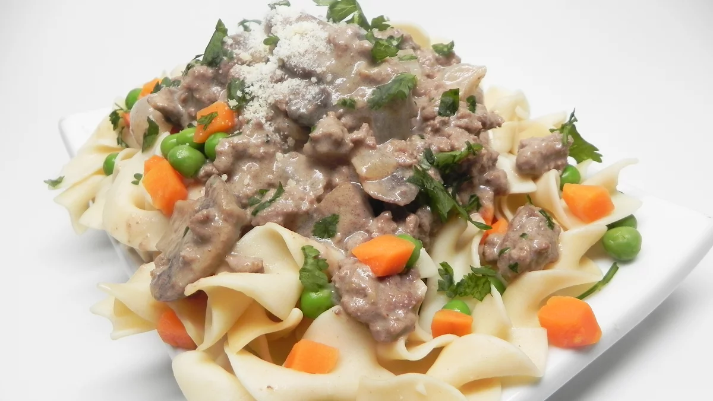

Recipes
Hybrid Hamburger Stroganoff

Recipe Summary
"I created this hamburger stroganoff as an amalgamation of about a half-dozen stroganoff recipes. Really hits the spot on a cold day, served over egg noodles with peas and carrots.""
- Mark Adams
Ingredients
- 1 pound lean ground beef.
- 1 (8 ounce) package sliced white mushrooms.
- 1 onion, chopped.
- 2 gloves garlic minced
- 1 teaspoon vegetable oil
- 1 cup red wine
- 1 cup beef stock
- 1 cup sour cream
- 2 tablespoons cornstarch
- 1 teaspoon ground black pepper
- 1 teaspoon salt, or more to taste
Method
- Heat a large skillet over medium-high heat. Add beef, mushrooms, and onion. Cook and stir until beef is browned and crumbly, 5 to 7 minutes. Drain and discard grease. Transfer mixture to a bowl. Add garlic and oil to the skillet; saute until garlic is golden brown, about 1 minute.
- Turn skillet heat to high; add red wine and beef stock. Bring to a boil while scraping the browned bits off of the bottom of the pan with a wooden spoon. Reduce heat and simmer until flavors meld, about 5 minutes.
- Whisk sour cream and cornstarch together in a bowl. Mix into the wine/broth mixture. Stir in the browned beef mixture. Bring to a simmer, stirring frequently. Add salt and pepper.
Nutrition facts
455 calories; protein 27.1g; carbohydrates 13.7g; fat 27.5g; cholesterol 104.3mg; sodium 710.5mg.